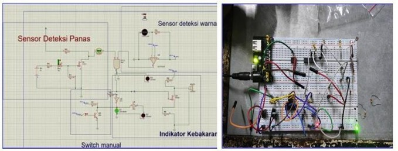

About Me
Third-year Electrical Engineering Student at Universitas Indonesia with a strong interest in electronics, embedded systems, and IoT. Experienced in IoT projects using ESP32 and Blynk, PCB and circuit design with Proteus and LTSPICE, and contributing to drone development in a robotics team. Quick to adapt, eager to learn, and comfortable working in collaborative environments.
Core Technologies
Projects
Analog RC Circuit
Analog RC oscillator that generates a sinusoidal wave at a frequency of 433 MHz.
Utilizes a three-stage RC network with a total phase shift of 360° using the LTC6268-10 op-amp.
Amplification is adjusted by resistors R1 (720ohm) and R2 (272 ohm), with power supply at +5V and 5V.
LTSPICE
KiCad
Automatic and Manual Fire Alarm Detector
Normal Condition
The thermistor does not detect heat, and the infrared sensor does not detect any flames. The green LED lights up to indicate a safe condition, and the buzzer remains off with no alert.
The thermistor does not detect heat, and the infrared sensor does not detect any flames. The green LED lights up to indicate a safe condition, and the buzzer remains off with no alert.
Spark Detected Condition
The infrared sensor detects a spark and sends a HIGH signal, while the thermistor remains LOW as it does not detect heat. The red LED lights up to warn of the spark. If there is uncertainty, the user can press the manual button to activate the alarm.
The infrared sensor detects a spark and sends a HIGH signal, while the thermistor remains LOW as it does not detect heat. The red LED lights up to warn of the spark. If there is uncertainty, the user can press the manual button to activate the alarm.
• Fire Condition
The thermistor detects high temperature and sends a HIGH signal, and the infrared sensor detects flames and also sends a HIGH signal. When both sensors (heat and flame) send a HIGH signal, the system detects a fire. The red LED lights up, and the buzzer activates to issue a fire warning.
The thermistor detects high temperature and sends a HIGH signal, and the infrared sensor detects flames and also sends a HIGH signal. When both sensors (heat and flame) send a HIGH signal, the system detects a fire. The red LED lights up, and the buzzer activates to issue a fire warning.
Proteus
classifying inverter circuit data using Principal Component Analysis (PCA) and K-Means Clustering

The analysis shows that the features n_k (motor speed) and u_dc_k(sampling current), u_dc_k1(sampling past) (DC-link voltage) are highly correlated.
PCA helps filter out the most important features, reducing noise and simplifying the clustering process
Once the key features are identified, K-Means Clustering is applied to group the inverter circuit data based on the patterns identified by PCA.
Python
Machine Learning
LNA Common-Source dengan Inductive Degeneration (5.0–5.2 GHz)
Designed and simulated a single-stage Low Noise Amplifier ...
Key Results
- Gain (S21): 14.695 dB
- S11: –12.072 dB
- S22: –12.496 dB
- Noise Figure: 0.582 dB
- Power Consumption: 109 mW
Tools Used: ADS (Advanced Design System)
ADS Software
RF Electronics